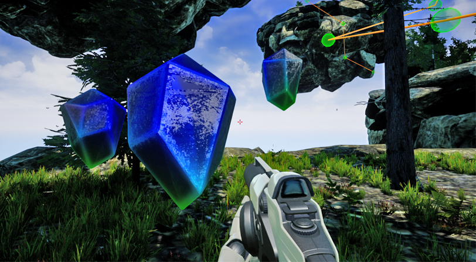
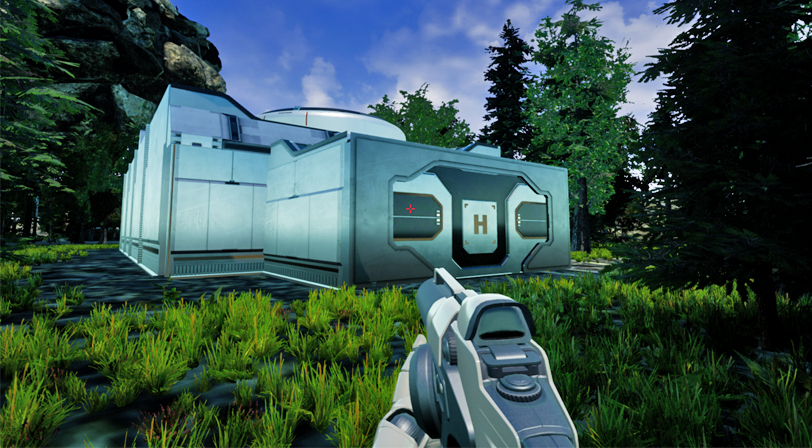

Bioshockish
An environment I made in Unreal Engine 4 using free assets.
The purpose of the project was to make an enviroment with too many polygons so that it ran poorly then to fix it as best as possible without removing any assets.
I improved the performance by implementing shifting LODs and asset loading.
I made a skyrail system between floating islands and collectable crystals using Blueprints.
Google Drive download link
(Link is down. Will fix)
Google Drive download link
(Link is down. Will fix)


To collect cyrstals walk up close & press F

Look here when riding 1st skyrail to see tree explosion trigger


Go in here on the 2nd island to spawn skyrail to 3rd island
-
Controls:
- WASD: Movement
- Left Click: Shoot ball
- Right Click: Attach to orb on skyrail
- Space: Jump/Jump off skyrail
- F: Move Forward & Stop on skyrail/Collect crystals
- E: Move Backward & Stop on skyrail
- P/ESC: Pause